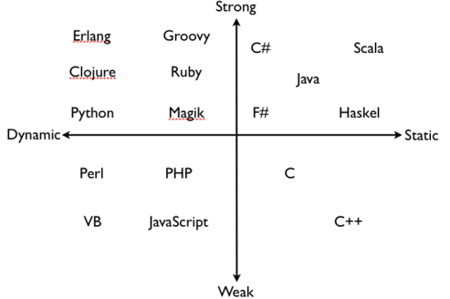
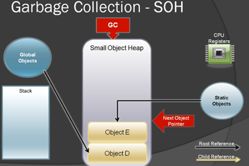
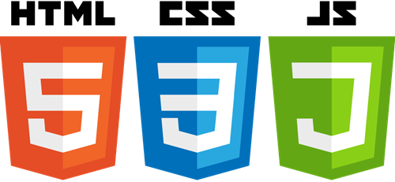

Para nosotros, los que estamos en el mundo de la programación, hemos llegado a un punto de inflexión. Hace diez años, los programadores se sentían atraídos por los lenguajes dinámicos. Para la mayoría de nosotros, los lenguajes dinámicos no solo hacían la programación más fácil, sino que también significaban una moda. Hoy en día, los lenguajes dinámicos ya no gozan de un favor especial; los programadores actuales utilizan una combinación de lenguajes nuevos y antiguos para desarrollar proyectos. No puedo evitar preguntarme: ¿qué lenguajes de programación son los que los programadores necesitan dominar permanentemente para mantener su competitividad?
Antes de discutir qué lenguajes de programación serán populares en el futuro, echemos un vistazo a las similitudes y diferencias entre los distintos lenguajes de programación.
Lenguajes estáticos vs. lenguajes dinámicos
Cuando hablamos de lenguajes dinámicos, ese "dinámico" en realidad se refiere al tipo de las variables. Al escribir programas con un lenguaje dinámico, se puede declarar una variable y, durante la ejecución del programa, cambiar el tipo de esa variable. Lo opuesto a los lenguajes dinámicos son los lenguajes estáticos, también llamados lenguajes de tipado fuerte. Por ejemplo, C++ y Java son lenguajes de tipado fuerte, mientras que JavaScript, PHP y Perl son lenguajes de tipado dinámico.
En C++, al declarar una variable debes especificar su tipo al mismo tiempo. Durante la ejecución del programa, si intentas cambiar el tipo de esa variable, el compilador mostrará un error. Esto también es así en Java.

Pero JavaScript es diferente; durante la ejecución de un programa en JavaScript se puede cambiar el tipo de una variable. De hecho, al declarar una variable no es necesario especificar su tipo. Al usar la variable, primero puedes asignarle un entero y luego sobrescribir ese entero con una cadena; todo esto está permitido en los lenguajes de tipado dinámico.
Aunque los lenguajes dinámicos solo se han vuelto muy populares recientemente, en realidad este concepto ya se propuso hace 50 años.
Lenguajes funcionales
Con el desarrollo de los lenguajes dinámicos, el interés por los lenguajes funcionales también ha ido en aumento. En los lenguajes funcionales, las funciones en sí mismas pueden almacenarse en variables, y las funciones almacenadas en variables pueden pasarse como argumentos a otras funciones. La mayoría de los lenguajes actuales admiten la programación funcional hasta cierto punto. Por ejemplo, C++ permite a los programadores pasar punteros a funciones. Lenguajes como JavaScript hacen que el paso de funciones sea mucho más fácil. Por lo tanto, generalmente se considera que C++ no es un lenguaje funcional en sentido estricto, que JavaScript sí es un lenguaje funcional, y que Haskell suele considerarse un excelente ejemplo de lenguaje funcional.
Mecanismo de recolección de basura
En teoría, siempre que escribas código correctamente, no tendrás ningún bug. Suena bonito. Pero en realidad, cuando colaboras con muchos otros programadores en un gran proyecto, hay un bug que aparece con frecuencia: la fuga de memoria. Defines una variable, y después de usarla no liberas esa parte de la memoria a tiempo; entonces decimos que se ha producido una fuga de memoria. Si ocurre una fuga de memoria y no se detecta a tiempo, a medida que el programa se ejecuta durante más tiempo, este va creciendo cada vez más, hasta consumir toda la memoria del sistema y provocar el colapso del sistema. ¡Suena terrible!

Podrías decir: si se libera la memoria a tiempo después de usar cada variable, ¿no evitaríamos las fugas de memoria? La idea es buena, pero la situación real puede ser mucho más complicada. Por ejemplo, solicitas una lista enlazada para almacenar datos, esa lista se pasa a otra función, escrita por otra persona; en esa función escrita por otra persona, se copia la lista, pero tú no lo sabes. ¿Debes eliminar la lista o seguir conservándola? Ante esta situación, los programadores pensaron en una solución alternativa: dejar el trabajo de recuperación de memoria al sistema. Cuando ya no usas una variable, el sistema escanea la memoria para encontrar esa memoria que ya no se usa y la recupera activamente; esto se llama mecanismo de recolección de basura. Esta es una característica muy importante para los lenguajes recién desarrollados. La idea detrás de la recolección de basura es hacer la programación más fácil, para que los programadores puedan centrar sus esfuerzos en crear gran software.
Cabe señalar que existen varios mecanismos diferentes de recolección de basura: uno es que el sistema escanea periódicamente la memoria y detecta la memoria que ya no se usa; el otro es que el sistema lleva un registro de cada variable y, en cuanto detecta que ya no se usa, la elimina de inmediato. Técnicamente, esto último no es un mecanismo de recolección de basura, sino un "recuento de referencias", pero el efecto es el mismo.
Máquina virtual

Cuando Java apareció a mediados de los años 90, a la gente le preocupaba mucho que no compilara el código directamente a lenguaje ensamblador. A diferencia de C++, Java, al compilar, primero convierte el programa en un código intermedio llamado bytecode. En tiempo de ejecución, el sistema invoca la máquina virtual para ejecutar el bytecode, y a veces incluso compila el bytecode a código ensamblador. Cuando este método de compilación apareció, los programadores se quejaban de que era lento, pero claro, eso ya no es un problema. Muchos lenguajes se ejecutan mediante una máquina virtual, como los mencionados Java y C#. Hoy en día, este tipo de lenguajes ha logrado un gran avance en velocidad.
Lenguajes
Dicho todo esto, ¿qué lenguajes deberían aprender realmente los programadores? A continuación se enumeran cinco lenguajes con gran demanda en el trabajo futuro. Además, también menciono un sexto lenguaje, como una "mención honorífica".

JavaScript, HTML5 y CSS3：
Técnicamente, HTML5 no es un lenguaje, sino una tecnología. Esta tecnología, junto con CSS3 y JavaScript, te permite construir aplicaciones basadas en la web. Puedes crear software que se ejecute en el navegador; la ventaja de hacerlo es que tus aplicaciones tendrán una portabilidad sin precedentes: pueden ejecutarse en casi todos los dispositivos, incluidos los móviles. Hace unos años, Facebook comenzó a usar HTML5 para crear sus aplicaciones móviles; se adelantaron a su tiempo, cuando HTML5 aún no estaba maduro. Después de un tiempo, volvieron al modelo tradicional. En los últimos dos años, los navegadores han empezado a implementar las mejores tecnologías de HTML5, y la demanda de JavaScript ha aumentado en consecuencia. Si quieres mantener tu competitividad, esta es una tecnología que debes aprender. (En el lado del servidor, muchas grandes empresas usan JavaScript mediante Node.js).
Ejemplo de JavaScript:
El siguiente ejemplo muestra cómo JavaScript almacena una función en una variable y luego la pasa a otra función. Para aprender JavaScript, consulta:Tutorial de JavaScript。
var myfunc = function() {
alert('hi');
};
setTimeout(myfunc, 2000);
C#：
Hace 15 años, Microsoft creó C#. Desde entonces, C# ha seguido creciendo y fortaleciéndose. La sintaxis de C# es similar a la de Java (y también a la de C++). El software de programación preferido para C# es Visual Studio, que tiene versiones gratuitas y de pago.
C# es un lenguaje de tipado fuerte, con una máquina virtual. Las versiones iniciales tenían muy poco soporte para la programación funcional; alrededor de 2006, Microsoft añadió algunas características de programación funcional a este lenguaje. Al igual que Java, C# también tiene su propio mecanismo de recolección de basura.
Ejemplo de C#:
El ejemplo define una clase llamada Program, que contiene una función llamada Main. El programa comienza a ejecutarse desde la función Main. La función Main define una variable x de tipo entero con tipado fuerte e imprime el valor de x en pantalla. Para aprender C#, consulta:Tutorial de C#。
using System;
class Program
{
static void Main()
{
int x = 1000;
Console.WriteLine(x);
}
}
Java：
Java está a punto de cumplir su vigésimo aniversario. Hasta el día de hoy, Java sigue desarrollándose y madurando. En 2004, un colega mío dijo que era un "lenguaje de juguete". Tras superar los dolores de crecimiento iniciales, Java ya no es un lenguaje de juguete: sostiene innumerables sitios web y bases de datos, y la suite ofimática de código abierto también se desarrolló con Java. Visto desde ahora, el futuro de Java sigue siendo muy prometedor.
Java es un lenguaje de tipado fuerte que se ejecuta en una máquina virtual con recolección de basura incorporada. Aunque no es un lenguaje funcional, tiene algunas características de la programación funcional.
Ejemplo de Java:
Java y C# son similares en muchos aspectos. En un programa Java, la ejecución comienza desde la función main. Igual que en el ejemplo de C# mencionado anteriormente, en la función main se define una variable x de tipo entero con tipado fuerte y se imprime el valor de x en pantalla. Para aprender Java, consulta:Tutorial de Java。
public class HelloWorld
{
public static void main(String[] args) {
int x = 1000;|
System.out.println(x);
}
}
PHP：
PHP es un lenguaje de programación general fácil de usar. Su sintaxis es similar a la de Java y C++. En un nivel muy sencillo, PHP se utiliza para incrustar contenido de texto variable en páginas web. Por ejemplo, en tu página web puede haber código PHP que imprima la fecha actual; cuando envías el código de la página al navegador, el código PHP correspondiente imprime la fecha actual en la pantalla. PHP puede hacer mucho más que imprimir fechas en una página web. Sus bibliotecas pueden manipular bases de datos (puede tratar casi cualquier base de datos que puedas imaginar), realizar cálculos científicos y procesar texto. El futuro de PHP sigue siendo muy prometedor.
Ejemplo de PHP:
El código PHP está incrustado en un documento HTML. Este código PHP establece la zona horaria en Los Ángeles y luego imprime la hora actual. Cuando el navegador analiza el documento HTML, la parte del código PHP se reemplaza por el resultado de la salida del código. Por lo tanto, lo que finalmente se muestra en la pantalla es "Hello! The current time is", seguido de la hora actual. Para aprender PHP, consulta:Tutorial de PHP。
<html>
<body>
Hello! The current time is
<?php
date_default_timezone_set('America/Los_Angeles');
echo (strftime('%c'));
?>
</body>
</html>
Swift：
Este es un lenguaje completamente nuevo, creado por Apple. En general, no recomendaría a la gente aprender un lenguaje completamente nuevo. Pero hay que tener en cuenta que estamos hablando de Apple, y que ahora ya puedes usar este nuevo lenguaje para crear aplicaciones de iOS. De hecho, ya hay señales de que Swift se convertirá en el futuro de la programación en la plataforma iOS. La sintaxis de Swift se parece mucho a la de JavaScript, pero sin punto y coma ni paréntesis.

Swift es un lenguaje de tipado fuerte que se ejecuta en una máquina virtual con recolección de basura.
Ejemplo de Swift:
En el ejemplo se define una variable llamada str que almacena una cadena. Aunque no se indica explícitamente el tipo de str, Swift es de tipado fuerte; el compilador deduce, a partir de la cadena al lado derecho de la asignación, que str es de tipo cadena. Para aprender Swift, consulta:Tutorial de introducción a Swift。
var str = "Hello, World!" println (str)
Erlang：
Erlang es un lenguaje de programación inventado por ingenieros de Ericsson en 1986. Originalmente era un lenguaje de programación especializado en el campo de las telecomunicaciones, pero ahora se ha convertido en un lenguaje de programación de propósito general, y se utiliza ampliamente en la computación paralela de alto rendimiento basada en la nube. Hoy en día, la gente usa Erlang para escribir software muy potente, como CouchDB y Riak. Es un lenguaje distintivo, con una forma muy extraña de manejar cadenas, pero también es fácil de aprender.
¿Deberíamos aprender Erlang? Aunque no hay muchos trabajos que requieran Erlang. Sin embargo, si realmente dominas este lenguaje, es muy probable que consigas un trabajo excelente. Es una decisión. Antes de dominar realmente el lenguaje, necesitas invertir mucho esfuerzo; una vez que lo dominas, la recompensa también es alta.
Ejemplo de Erlang:
A continuación se muestra una versión compleja del ejemplo "hello world". Recuerda, Erlang es un lenguaje maduro; si realmente planeas aprender este lenguaje, visita:http://learnyousomeerlang.com。
-module(hello).
-export([start/0]).
start() ->
spawn(fun() -> loop() end).
loop() ->
receive
hello ->
io:format("Hello, World!~n"),
loop();
goodbye ->
ok
Nota final
Los programadores seguramente pueden encontrar trabajo en cualquier lugar, pero no necesariamente en un puesto que te guste especialmente; la clave está en aprender tecnologías que realmente sean útiles y encontrar ese buen trabajo que te corresponde. Aprender JavaScript, C#, Java, PHP, C++ no será un error. Si empiezas a aprender Swift, el panorama laboral futuro es muy prometedor. Si quieres probar la programación de alto rendimiento, mira Erlang, aunque los trabajos que requieren Erlang no aparezcan de inmediato. No importa en qué lenguaje te estés enfocando ahora, debes ser constante y dominarlo a fondo; esa es la clave.
(Fuente en inglés:News.Dice, traductor: moqiguzhu)
Haz clic para compartir notas
<p style="font-size:14px;">¡Las notas deben ser una extensión del contenido de este artículo!</p><br> <p style="font-size:12px;"><a href="../tougao.html" target="_blank">Envío de artículos, haz clic aquí</a></p> <p style="font-size:14px;"><a href="./runoob-user-test-intro.html" target="_blank">Cómo obtener el código de invitación de registro</a></p> <h3 class="text-muted"><i class="fa fa-info-circle" aria-hidden="true"></i> Debes <a href=".." class="runoob-pop">iniciar sesión</a> antes de compartir notas.</h3> <p><a href="./runoob-user-test-intro.html" target="_blank">Cómo obtener el código de invitación de registro</a></p>